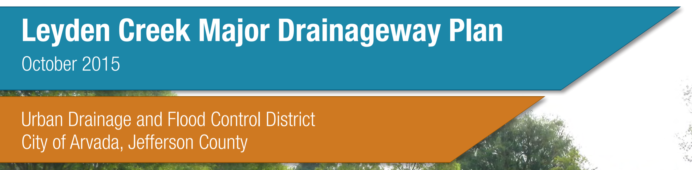

Table of Contents
1.0 Introduction
- 1.1 Authorization
- 1.2 Purpose and Scope
- 1.3 Planning Process
- 1.4 Mapping and Surveys
- 1.5 Data Collection
- 1.6 Acknowledgments
2.0 Study Area Description
- 2.1 Project Area
- 2.2 Land Use
- 2.3 Reach Description
- 2.4 Flood History
3.0 Hydrologic Analysis
- 3.1 Overview
- 3.2 Design Rainfall
- 3.3 Subwatershed Characteristics
- 3.3.1 Subwatershed Delineation
- 3.3.2 Watershed Imperviousness
- 3.3.3 Length, Centroid Distance, Slope
- 3.3.4 Depression Losses
- 3.3.5 Infiltration
- 3.4 Hydrograph Routing
- 3.4.1 Manning's n Coefficient
- 3.4.2 Conveyance Elements
- 3.4.3 Detention Facilities
- 3.5 Previous Studies
- 3.6 Hydrograph Calibration
- 3.7 Results of Analysis
4.0 Hydraulic Analysis
5.0 Alternative Analysis
Not Included in Summary Report
6.0 Recommended Plan
- 6.1 Plan Description
- 6.2 Water Quality Impacts
- 6.3 Operations and Maintenance
- 6.4 Environmental and Safety Assessment
7.0 Conceptual Design
- 7.1 Plan Development Overview
- 7.2 Master Plan Description
- 7.3 Prioritization and Phasing
- 7.4 Water Quality Impacts
- 7.5 Operations and Maintenance
- 7.6 Environmental and Safety Assessment
List of Tables
- Table 1-1: Data Collected
- Table 1-2: Project Participants
- Table 2-1: Land Use Description
- Table 3-1: 1-hr Rainfall Depths
- Table 3-2: Previous Studies Reconciliation (100 yr. Flows)
- Table 3-3: Summary of Peak Flows
- Table 4-1: Buildings in Existing 100-yr Floodplain
- Table 4-2: Existing Facilities Table
- Table 6-1: Recommended Cost Estimate Summary
- Table 6-2: Jurisdictional Cost Estimate Summary
- Table 7-1: Reach 1 Cost Estimate Summary
- Table 7-2: Reach 2 Cost Estimate Summary
- Table 7-3: Reach 3 Cost Estimate Summary
- Table 7-4: Reach 4 Cost Estimate Summary
- Table 7-5: Cost Estimate Summary by Reach
- Table 7-6: Cost Estimate Summary by Jurisdiction